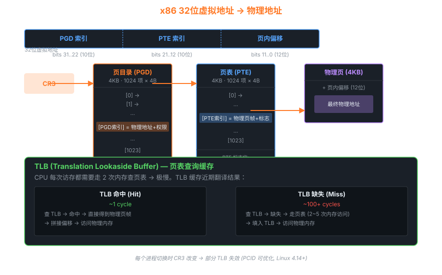

04内存管理 — 页表、buddy、slab、NUMA
内存管理是内核最复杂的子系统之一。本章按"从硬件到分配器"的顺序逐层剖析。
4.1 硬件视角：页表与 TLB

x86 32位多级页表查询 + TLB 命中/缺失
x86_64 实际是 4~5 级页表
| 层级 | 名称 | 覆盖范围 | 项数 |
|---|---|---|---|
| 1 | PGD (P4D in 5-level) | 512GB / 256TB | 512 |
| 2 | PUD | 1GB / page | 512 |
| 3 | PMD | 2MB / page | 512 |
| 4 | PTE | 4KB / page | 512 |
| +0 | 页内偏移 | 4KB | 4096 字节 |
4.2 物理内存的"分区"
因为不同物理地址范围有硬件限制，内核把物理内存分为多个 zone：
| Zone | 地址范围 (x86_64) | 用途 |
|---|---|---|
| ZONE_DMA | 0 ~ 16MB | 老 ISA DMA 设备 |
| ZONE_DMA32 | 0 ~ 4GB | 32 位 DMA 设备 |
| ZONE_NORMAL | 4GB 起 | 常规分配 |
| ZONE_MOVABLE | — | 可迁移页（用于热插拔） |
NUMA 系统每个 node 独立一组 zone：node 0 [DMA, DMA32, Normal] · node 1 [DMA32, Normal] ...
4.3 Buddy System — 页粒度分配器
Buddy 算法：每阶维护 free 链表，按 2 的幂分裂/合并
4.4 Slab — 小对象高效分配
Buddy 最小单位是 4KB 页，但内核 90% 的分配是 kmalloc(64) 这种小对象。直接给 4KB 浪费 98%！
Slab 在 Buddy 之上分配几页大块，然后切成小对象供 kmalloc 使用：
/* mm/slub.c — SLUB 是 Linux 默认 slab 实现 */ struct kmem_cache { unsigned int object_size; // 单个对象大小 unsigned int size; // 含 metadata 实际占用 unsigned int offset; // freelist 指针偏移 struct kmem_cache_node *node[MAX_NUMNODES]; struct kmem_cache_cpu __percpu *cpu_slab; // per-CPU 热缓存 const char *name; }; /* 常见 cache: task_struct, mm_struct, inode, dentry, ... */ static struct kmem_cache *task_struct_cachep; void *kmalloc(size_t size, gfp_t flags) { // kmalloc 内部就是 8/16/32/.../8192 字节的多个 kmem_cache struct kmem_cache *s = kmalloc_caches[kmalloc_index(size)]; return kmem_cache_alloc(s, flags); }
查看 slab 使用情况：cat /proc/slabinfo
4.5 NUMA — 现代多 socket 系统
NUMA 是什么
多 CPU socket 服务器（如 2~8 路），每个 socket 自带一组内存控制器。CPU 0 访问 node 1 的内存要经过 QPI/UPI 总线，比访问本地 node 0 的内存慢 30~50%。
Linux 的对策：numa_balancing 自动把进程的页面"迁回"它常运行的 CPU 所在 node。
# 查 NUMA 拓扑 numactl --hardware # 显式绑定进程到 node 0 numactl --cpunodebind=0 --membind=0 ./my_program # 内核统计 cat /sys/devices/system/node/node0/meminfo cat /proc/<pid>/numa_maps
4.6 内存回收 — kswapd 与 OOM
OOM Killer 的选择策略
/* mm/oom_kill.c */ static long oom_badness(struct task_struct *p) { long points; points = get_mm_rss(p->mm) + get_mm_counter(p->mm, MM_SWAPENTS) + mm_pgtables_bytes(p->mm) / PAGE_SIZE; // 调整: oom_score_adj 用户/管理员可手动加减分 points += (p->signal->oom_score_adj * totalpages) / 1000; return points; } // 最高分进程 → kill -9 (SIGKILL)
保护关键进程不被 OOM-kill
echo -1000 > /proc/$(pidof myserver)/oom_score_adj # 永不杀 echo 1000 > /proc/$(pidof junk)/oom_score_adj # 优先杀
4.7 透明大页 (THP) 与 KSM
- THP：自动把 4KB 页合并为 2MB 大页 → 减少 TLB 缺失，但增加内存压力
- KSM (Kernel Samepage Merging)：扫描相同内容页，合并节省内存（KVM 虚拟机常用）
cat /sys/kernel/mm/transparent_hugepage/enabled
# always [madvise] never
echo madvise > /sys/kernel/mm/transparent_hugepage/enabled